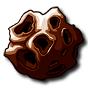
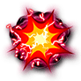

Abenteuerkarten
 Oben links im Flugbildschirm liegt ein Kartenstapel. Klicke auf den Stapel, um die nächste Abenteuerkarte aufzudecken.
Oben links im Flugbildschirm liegt ein Kartenstapel. Klicke auf den Stapel, um die nächste Abenteuerkarte aufzudecken.
Die Karten werden unten erklärt:

Freier Weltraum
Freier Weltraum ist so was wie eine schöne breite deutsche Autobahn ohne Maut. Wie schnell bist du?
Die potenzielle Motorenstärke wird auf dem Bildschirm angezeigt. Bei Schiffen mit Doppelmotoren wird ein Bereich der Motorenstärke angezeigt, weil man sich aussuchen kann, ob man Batterien  ausgeben möchte.
ausgeben möchte.
Die Spieler wählen ihre Motorenstärke nacheinander. Du kennst also die Motorenstärke der Spieler vor dir, wenn du deinen Auswahl triffst. Um einen Doppelmotor zu benutzen, klicke auf eine Batterie oder ziehe eine Batterie auf einen Doppelmotor. Wenn du fertig bist, klicke auf das  Symbol, um deine Motorenstärke zu bestätigen.
Symbol, um deine Motorenstärke zu bestätigen.
Es ist egal, welchen Doppelmotor du mit Strom versorgen willst. Alle haben die gleiche Wirkung. Allerdings könnte deine Batterieauswahl von Bedeutung sein. Einige Batteriekomponenten sind gefährdeter als andere. Versuche also, zuerst die aufzubrauchen, die vermutlich als erste vom Schiff abfallen.
Sobald alle Motorenstärken festgelegt wurden, bewegt sich jeder um die entsprechende Anzahl Flugtage weiter.
Selbst, wenn du kein Interesse am Vorwärtskommen hast, brauchst du trotzdem noch Motoren. Ein Schiff mit Motorenstärke 0 im Freien Weltraum muss den Flug aufgeben.
Planeten

Mit Glück wird eine Karte mit 2 bis 4 Planeten aufgedeckt, auf denen du landen und Waren aufnehmen kannst. Der Führende wählt zuerst, danach die anderen Spieler in Flugreihenfolge.
Wenn du die Wahl zwischen verschiedenen Landeorten hast, prüfe deine Ladeflächen. Klicke auf deinen Avatar, um deine Schiffsdetails zu sehen.
Klicke auf den Planeten, auf dem du landen willst und klicke auf das  Symbol zur Bestätigung. Die Landung auf einem Planeten kostet so viele Flugtage, wie unten rechts auf der Karte angegeben. Wenn du auf keinem Planeten landen willst, klicke einfach auf das
Symbol zur Bestätigung. Die Landung auf einem Planeten kostet so viele Flugtage, wie unten rechts auf der Karte angegeben. Wenn du auf keinem Planeten landen willst, klicke einfach auf das  Symbol.
Symbol.
Kein Spieler ist zur Landung gezwungen. Es kann auch vorkommen, dass bei wenigen Planeten die führenden Spieler alle besetzen und die anderen daher gar keine Landemöglichkeit mehr haben. Es ist erlaubt, einfach zu landen, ohne Waren aufzunehmen, um andere Spieler an der Landung zu hindern. (Überlege aber vorher, ob der Verlust an Flugtagen das wirklich wert ist.)
Wer sich zur Landung entscheidet, lädt die angegebenen Waren, indem er auf die Waren klickt oder indem er sie auf seine Ladeflächen zieht. Waren können dabei neu angeordnet oder abgeworfen werden. Sobald alle Spieler ihre Waren eingeräumt haben, verlieren alle, die gelandet sind, Flugtage.

Verlassenes Schiff
Wenn du ein verlassenes Schiff findest, kannst du richtig absahnen! Es gibt da zwar ein paar Vorschriften, solche Sachen zu melden, aber pfeif drauf. Bestimmt sind einige in deiner Besatzung es leid, unter deinem Kommando zu stehen und sparen schon lange auf ein eigenes Schiff. Schnapp dir das verlassene Schiff und verkaufe es an deine Leute zu einem fairen Preis.
Nur ein einziger Spieler hat dazu die Möglichkeit. Wenn kein Spieler vor dir diese Möglichkeit ergreift, kannst du zu diesem Schiff Besatzung hinschicken, indem du Besatzungsmitglieder anklickst. Die Besatzungsmitglieder werden zum Schiff rüberfliegen und nicht zurückkommen. Du bekommst so viele Credits, wie auf der Karte verzeichnet sind und du verlierst die angegebene Zahl Flugtage.
Wenn du keine Besatzung wegschicken willst, klicke auf das  Symbol. Damit haben die Spieler nach dir die Möglichkeit, zuzugreifen. Solltest du nicht genug Besatzung zum Steuern des verlassenen Schiffs haben, wirst du automatisch übersprungen.
Symbol. Damit haben die Spieler nach dir die Möglichkeit, zuzugreifen. Solltest du nicht genug Besatzung zum Steuern des verlassenen Schiffs haben, wirst du automatisch übersprungen.

Verlassene Station

Als die Bewohner ihre Station wegen eines tragischen Unglücks verlassen mussten, haben sie bestimmt eine Menge Wertsachen zurückgelassen. Willst du danach suchen, brauchst du eine große Besatzung. Um diese Möglichkeit nutzen zu können, brauchst du mindestens so viel Besatzungsmitglieder wie auf der Karte angegeben.
Nur ein einziger Spieler hat dazu die Möglichkeit. Wenn keiner der vor dir fliegenden Spieler es tut, kannst du das  Symbol anklicken, um die Station auszuplündern! Äh, um dort nach Überlebenden zu suchen. Genau. Es geht um einen humanitären Zweck. Du bekommst die Waren von der Raumstation und verlierst die angegebene Zahl von Flugtagen.
Symbol anklicken, um die Station auszuplündern! Äh, um dort nach Überlebenden zu suchen. Genau. Es geht um einen humanitären Zweck. Du bekommst die Waren von der Raumstation und verlierst die angegebene Zahl von Flugtagen.
Du verlierst keine Besatzung. Anders als beim Verlassenen Schiff kommt deine Besatzung zurück, nachdem sie die Station geplündert hat. Äh, natürlich: untersucht hat.
Wenn du die verlassene Station nicht untersuchen willst, klicke auf das  Symbol. Damit haben die Spieler nach dir die Möglichkeit, zuzugreifen. Solltest du nicht genug Besatzung zum Steuern des verlassenen Schiffs haben, wirst du automatisch übersprungen.
Symbol. Damit haben die Spieler nach dir die Möglichkeit, zuzugreifen. Solltest du nicht genug Besatzung zum Steuern des verlassenen Schiffs haben, wirst du automatisch übersprungen.
Meteorschwarm

Ein Meteorschwarm kann schlimme Lackschäden verursachen. Diese Karte zeigt verschiedene große und/oder kleine Meteoriten (genau genommen sind es Meteoroiden, aber das klingt so blöd) und die Richtungen aus denen sie kommen. Meteoriten werden einer nach dem anderen abgehandelt. Sie betreffen alle Spieler gleichzeitig.
Pro Meteor würfelt das Spiel mit zwei Würfeln. Der Wurf legt fest, in welche Reihe oder Spalte der Meteorit einschlagen kann. Du siehst das Ergebnis der Meteorbedrohung neben den Avataren der Spieler und außerdem auf der Flugplan-Ansicht. Einige Meteoriten werden automatisch abgehandelt. Bei anderen musst du eine Entscheidung treffen. Meteoriten verhalten sich gemäß folgender Regeln:
Kleiner Meteorit
Ein kleiner Meteorit wird von einem gut konstruierten Schiff abprallen. Problematisch wird es, wenn er auf einen offenen Anschluss trifft. In diesem Fall kannst du einen Schaden verhindern, wenn du einen Schild mit Strom versorgst, der die betreffende Seite schützt. Du verbrauchst dafür 1 Batterie  . Wenn du dich gegen diesen Treffer nicht verteidigen kannst oder willst, wird das vom Meteorit getroffene Bauteil zerstört.
. Wenn du dich gegen diesen Treffer nicht verteidigen kannst oder willst, wird das vom Meteorit getroffene Bauteil zerstört.
Großer Meteorit
Ein großer Meteorit ist natürlich deutlich gefährlicher. Er beschädigt sogar ein gut konstruiertes Schiff und Schilde machen ihm nichts aus. Deine einzige Hoffnung ist es, ihn mit einer Kanone wegzupusten.
Kommt der Meteorit von vorn, brauchst du eine Kanone in exakt der Spalte des Meteoriten.
Kommt er von der Seite, kannst du ihn mit einer Kanone in dieser Reihe oder einer der beiden angrenzenden Reihen abschießen.
Kommt der Meteorit von hinten, kannst du ihn mit einer Kanone in dieser Spalte oder einer der beiden angrenzenden Spalten abschießen.
Das Spiel wird jeden großen Meteorit automatisch abschießen, der mit einer einfachen Kanone abgeschossen werden kann. Wenn du einen großen Meteorit nur mit einer Doppelkanone abschießen kannst, gibt dir das Spiel die Möglichkeit, eine BatterieGroße Meteoriten kommen meistens von vorn, was ein Grund dafür ist, dass es sich empfiehlt, in jeder Spalte eine nach vorne zeigende Kanone zu haben.
Allerdings können sie auch von der Seite oder von hinten kommen. Überprüfe also immer die Abenteuervorhersage während des Baus.
Eine zur Seite zeigende Kanone deckt 3 Reihen ab – ihre eigene und die beiden daran angrenzenden Reihen. Also könntest du mit zwei bis drei Kanonen eine ganze Seite schützen.
Auch wenn du nicht jede Spalte oder Reihe schützen kannst, würde es helfen, wenn du einfach die Spalten und Reihen schützt, die am wahrscheinlichsten getroffen werden: 6, 7 und 8.

Feinde (Schmuggler, Sklavenhändler und Piraten)
Feinde stellen für alle eine Bedrohung dar, greifen die Schiffe der Spieler aber nacheinander an. Zuerst greifen sie den Führenden an. Wenn sie nicht besiegt werden, greifen sie dann den nachfolgenden Spieler an, und so weiter, bis sie entweder alle angegriffen haben oder besiegt wurden.
Die Stärke der Feinde steht als Zahl direkt neben dem Kanonensymbol. Diese Schmuggler haben zum Beispiel die Stärke 4. Um die Feinde zu besiegen, brauchst du eine höhere Kanonenstärke. Ist sie niedriger, besiegen die Feinde dich.
Deine Kanonenstärke wird meistens automatisch berechnet. Wenn du sie nur dann besiegen oder einen Gleichstand erzielen kannst, indem du eine Doppelkanone benutzt, wird das Spiel dich fragen, ob du Batterien  zum Betreiben von Doppelkanonen einsetzen möchtest.
zum Betreiben von Doppelkanonen einsetzen möchtest.
Die obere Hälfte der Karte gibt an, was passiert, wenn du verlierst. Wenn du zum Beispiel gegen diese Schmuggler verlierst, stehlen sie dir 2 Waren. Sklavenhändler nehmen dir ein paar Besatzungsmitglieder weg. Piraten werden auf dich schießen. Nachdem sie dich besiegt haben, werden die Feinde sich dem nächsten Spieler zuwenden.
Wenn du bei einem Feind einen Gleichstand erzielst, schadet er dir nicht, wird sich aber anschließend dem nächsten Spieler zuwenden.
Die untere Hälfte gibt an, was du bekommst, wenn du gewinnst. Manchmal bekommst du eine Geldbelohnung für das Besiegen der bösen Jungs. Wenn du Schmuggler besiegst, bekommst du die angegebenen Waren. Wie immer verlierst du, wenn du die Belohnung annimmst, Flugtage. Wenn du die Belohnung nicht möchtest, klickst du einfach auf das  Symbol.
Symbol.
Wenn du die Feinde besiegst, fliegen sie davon. Sie werden den nächsten Spieler nicht mehr angreifen.
Wenn du ausreichend Kanonen zum Besiegen der Feinde hast, solltest du zusehen, ganz vorne zu fliegen, um die Belohnung zu kassieren. Wenn du die Feinde nicht besiegen kannst, solltest du hinter einem Trucker fliegen, der das kann.
Kampfzone
Der wahre Test eines jeden Raumschiffs ist der Flug durch eine Kampfzone. Du stellst dich nacheinander drei Herausforderungen. Jede zeigt eine Kategorie und eine Strafe für den Spieler, der dabei am schlechtesten abschneidet. Wenn mehrere Spieler gleich schlecht sind, erhält derjenige von diesen die Strafe, der am weitesten vorne fliegt, also lohnt es sich hier, nicht ganz so weit vorzupreschen.
Wir nehmen mal diese Karte als Beispiel. Folgendes passiert nacheinander:
- Der Spieler mit den wenigsten Besatzungsmitgliedern verliert 3 Flugtage.
- Nacheinander entscheiden die Spieler, ob sie Batterien
 für Doppelmotore ausgeben wollen. Der Spieler mit der geringsten Motorstärke verliert zwei Besatzungsmitglieder.
für Doppelmotore ausgeben wollen. Der Spieler mit der geringsten Motorstärke verliert zwei Besatzungsmitglieder. - Nacheinander entscheiden die Spieler, ob sie Batterien für Doppelkanonen ausgeben wollen. Der Spieler mit der geringsten Kanonenstärke erleidet Kanonenfeuer von hinten.
Jede Kampfzone besitzt dieselben drei Kategorien, allerdings können sie in beliebiger Reihenfolge vorkommen. Zusätzlich zu den hier gezeigten Strafen nehmen dir einige Kampfzonen Waren weg.
Kanonenfeuer
Kanonenfeuer kann übel werden. Kanonentreffer funktionieren wie Treffer durch Meteoriten, die Verteidigung dagegen ist aber schwieriger. Jeder Treffer hat ein bestimmtes Ziel. Das Spiel wirft mit zwei Würfeln, um festzustellen, welche Reihe oder Spalte getroffen wird, womit festgelegt wird, welches Bauteil (falls dort vorhanden) in Gefahr ist.
Leichtes Kanonenfeuer
Die einzige Möglichkeit, leichtes Kanonenfeuer abzuwehren, ist ein Schild, der gegen Treffer aus dieser Richtung schützt. Er kann durch Ausgabe von 1 Batterie  aktiviert werden. Ansonsten wird das Bauteil zerstört.
aktiviert werden. Ansonsten wird das Bauteil zerstört.
Schweres Kanonenfeuer
Es gibt keine Möglichkeit, sich gegen schweres Kanonenfeuer zu schützen. Du kannst bloß hoffen, dass es dein Schiff komplett verfehlt. Anderenfalls wird das getroffene Bauteil zerstört.
Sternenstaub

Sternenstaub ist nerviges Zeug. Er setzt sich einfach überall fest. Jeder Spieler verliert 1 Flugtag pro offenem Anschluss.
Epidemie
Du weißt ja, wie es ist. Ein Besatzungsmitglied hustet kurz, und schon ist deine ganze Crew tot. Wenn eine Epidemie zuschlägt, verlierst du 1 Besatzungsmitglied (Mensch oder Alien) in jeder besetzten Kabine, die direkt mit einer anderen besetzten Kabine verbunden ist.
Es ist also am sichersten, dein Schiff so zu bauen, dass nie zwei Kabinen direkt miteinander verbunden sind. Wenn du verbundene Kabinen hast, könntest du versuchen, eine zu leeren, bevor die Epidemie zuschlägt. Es hilft sehr, wenn du weißt, ob in den Abenteuerkarten für diesen Flug die Epidemie vorkommt. Vergiss also nicht, dir beim Bau die Karten anzusehen.
Wir wurden gerade darüber informiert, dass die betroffenen Besatzungsmitglieder nicht tot sind. Gemäß der Corporation mbH wurden alle in Fluchtkapseln heimgeschickt und erholen sich inzwischen. Trotzdem solltest du dir die Hände gut waschen.
Sabotage
Du brauchst eine Menge aufmerksamer Augenpaare, um dich vor dem Angriff eines gewitzten Saboteurs zu schützen. Das Schiff mit der kleinsten Besatzung fällt der Sabotage zum Opfer! Sollten mehrere Schiffe die kleinste Besatzung haben, wird dasjenige weiter vorn sabotiert, also ist auch dies eine Situation, in der es schlau sein kann, nicht ganz vorne zu fliegen.
Das Spiel wirft mit 2 Würfeln, um Reihe und Spalte des Angriffs festzulegen. Wenn das Ergebnis nicht ein Bauteil des Schiffs ist, wird erneut gewürfelt. Wenn drei Würfe misslingen, entkommt das Schiff der Sabotage! Anderenfalls wird das erste gültige Bauteil zerstört.